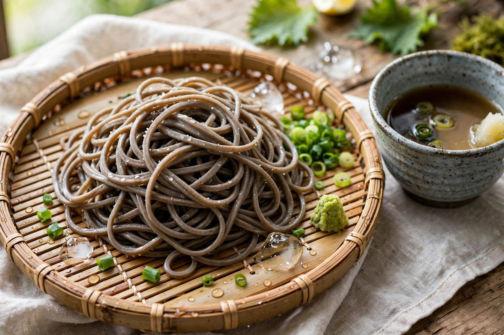

Soba Noodles — Buckwheat Noodles, Hot and Cold
How to cook soba noodles, make dipping sauce, and serve them hot in broth or cold with toppings.
What soba is
Soba are thin noodles made from buckwheat flour, sometimes mixed with wheat flour. They have a nutty, earthy flavour and a firm texture that is quite different from udon or ramen. Soba is one of Japan's oldest noodle traditions, and it is eaten hot in broth in winter and cold with dipping sauce in summer. Pure buckwheat soba, called juwari, is gluten-free, though most shop-bought soba contains some wheat, so check the label if that matters to you. Soba cooks quickly and suits simple preparations where the noodle itself is the star.
Cooking soba
Cook soba in a large pot of unsalted water for about four to five minutes, or follow the packet time. Stir gently at first so the strands do not stick. Soba foams a lot as it cooks, so keep the heat moderate and have a cup of cold water ready to add if the pot threatens to boil over. Drain the noodles in a colander and rinse them well under cold running water, rubbing them gently to remove surface starch. This rinsing step is essential: unrinsed soba is sticky and gummy. For hot soba, warm the rinsed noodles briefly in the hot broth before serving.
Cold soba with dipping sauce
The classic summer dish is zaru soba: cold noodles served on a bamboo strainer with a chilled dipping sauce called mentsuyu, grated daikon, spring onion, and wasabi. Dip a small bundle of noodles into the sauce rather than soaking them, and lift them to your mouth with chopsticks. The contrast of cold, firm noodles and savoury sauce is refreshing on a hot day. Tempura, especially prawn tempura, is the traditional accompaniment. A small dish of the hot water the soba cooked in, called soba-yu, is sometimes served at the end to dilute the leftover dipping sauce as a drink.
Hot soba in broth
Hot soba is served in a bowl of dashi-based broth, similar to udon broth but often a little lighter. Popular toppings include tempura, a soft egg, wakame seaweed, spring onion, and aburaage. Kitsune soba uses the same sweet simmered tofu pouches as kitsune udon. Warm the rinsed noodles in the broth for thirty seconds, then add the toppings and serve immediately. Hot soba is a quick, warming lunch that takes about fifteen minutes from start to finish, and it is lighter than ramen, which makes it a good everyday choice.
Choosing good soba
Look for soba with a high buckwheat content, ideally 80 percent or more, and check the ingredients list: the first ingredient should be buckwheat flour. Fresh soba from a Japanese shop is best, but good dried soba is widely available and keeps for months. Avoid very cheap soba that is mostly wheat flour with a little buckwheat for colour; it tastes like plain wheat noodles. Store dried soba in a cool, dry place, and use it within a few months of opening for the best flavour.
Soba etiquette and serving
Slurping soba is normal and expected in Japan, and it cools the noodles and carries the aroma. Serve cold soba on a flat plate or strainer so the noodles do not sit in water, and serve hot soba in deep bowls with chopsticks and a spoon. Soba is often eaten on New Year's Eve as toshikoshi soba, symbolising a long life and a clean break with the old year. Whether for a celebration or a quick lunch, soba rewards simple treatment: good noodles, good broth, and one or two toppings are all it needs.
Frequently Asked Questions
Is soba gluten-free?
Only pure buckwheat soba (juwari, 100% buckwheat) is gluten-free. Most shop-bought soba contains wheat flour, so check the label carefully if you need gluten-free noodles.
Why do I need to rinse soba after cooking?
Rinsing removes surface starch that makes the noodles sticky and gummy. It also stops the cooking, keeping the texture firm. Rinse under cold water, rubbing the strands gently.
What is soba-yu?
Soba-yu is the hot water the soba was cooked in. It is served after cold soba to dilute the leftover dipping sauce into a warm drink. It is a traditional, comforting end to the meal.